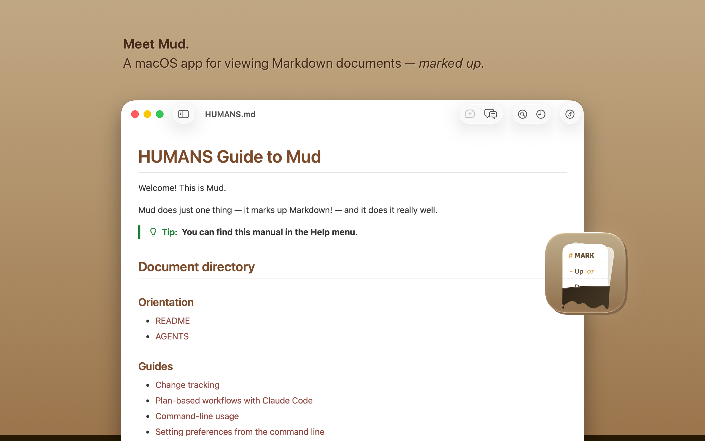
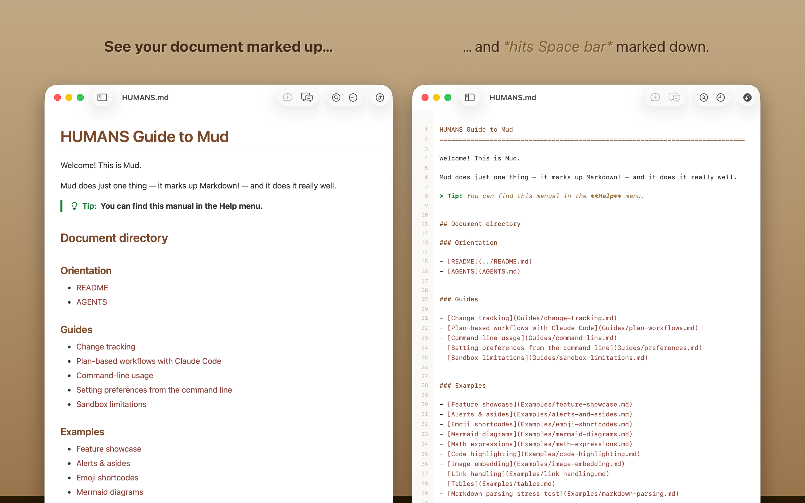
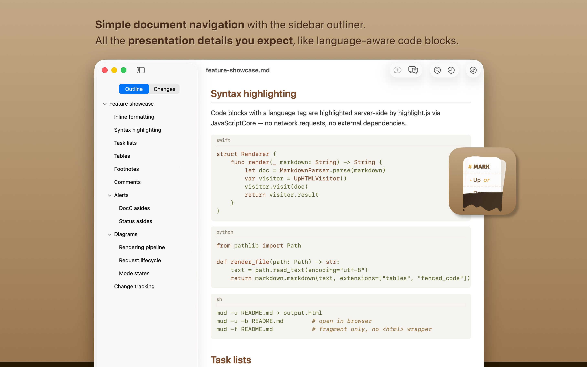
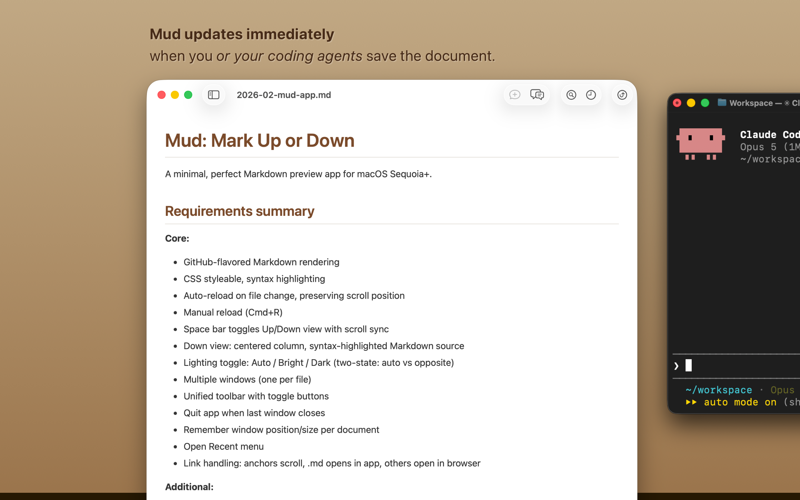
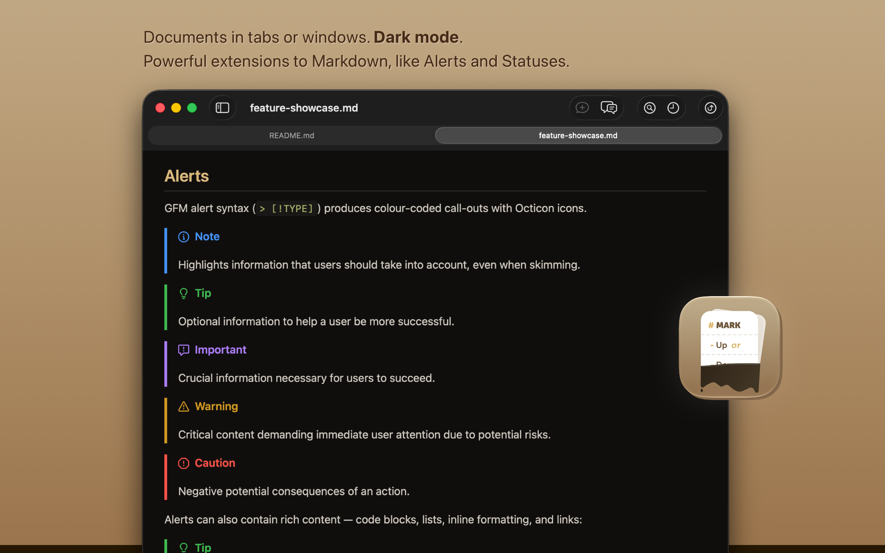
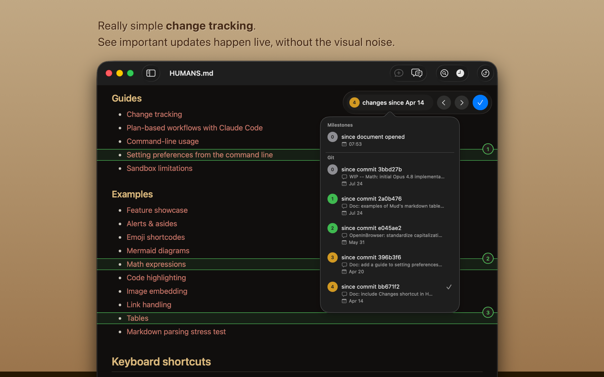
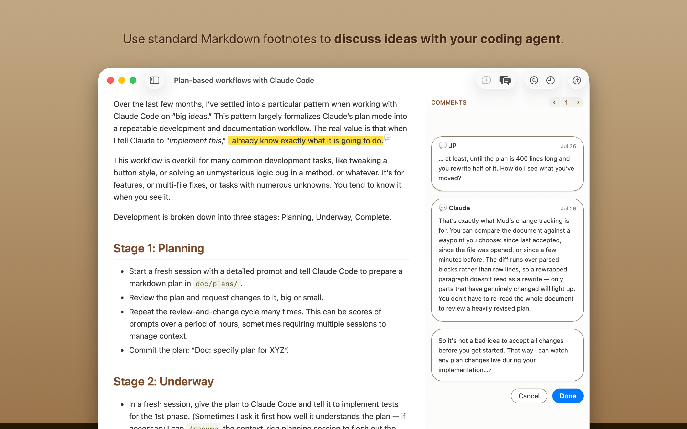
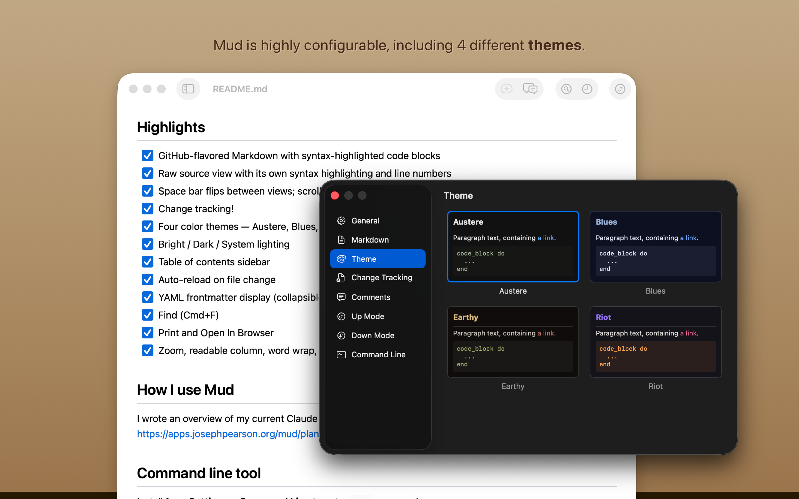
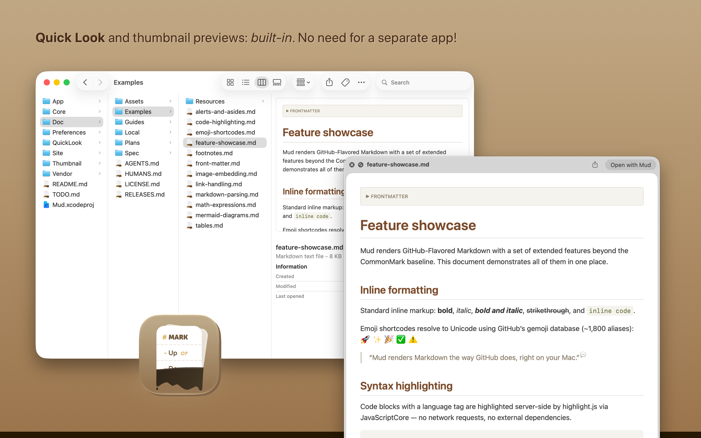
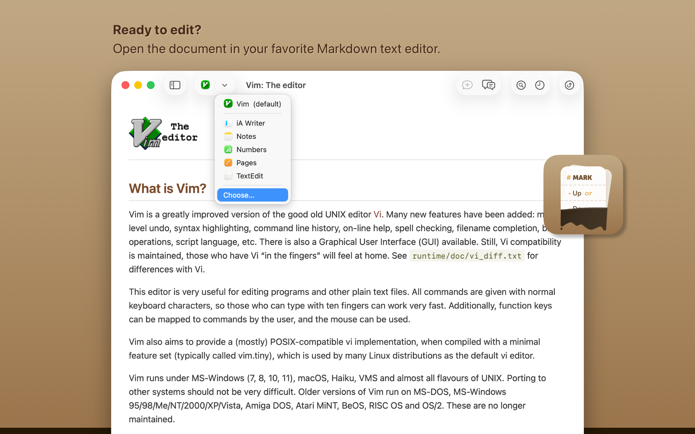

Status: Active development
Why Mud?
Markdown is suddenly everywhere.
It’s how we speak to machines now. It’s how they speak to us.
We should make it nice!
But you already have a favorite text editor. You don’t need a special tool for writing Markdown. You just need a way to preview the Markdown you’re writing, marked up.
That’s what Mud is for. It renders Markdown beautifully, bright or dark. It automatically reloads the document when you save it — or when Claude Code writes to it, or Codex, or whatever you use.
Mud shows you both sides of the document:
- Mark Up renders your Markdown as styled HTML — GitHub-flavored, with syntax-highlighted code.
- Mark Down shows the raw source with line numbers.
Hit Space to flip between them. Your scroll position carries over.
Mud is a Mac-assed Mac app with excellent command-line tooling. It’s free and it’s open source.
Quick start
Mud requires macOS Sonoma (14.0) or higher, and comes in two flavors:
Highlights
- GitHub-flavored Markdown with syntax-highlighted code blocks
- Full support for macOS Quick Look and thumbnail previews in Finder
- Comments! Take notes for yourself and your collaborators, or chat with your agent
- Change tracking! See what your coding agent is doing to the document
- Reload automatically every time the file is saved to disk
- Table of contents — document outliner in sidebar
- Four color themes — Austere, Blues, Earthy, Riot
- Dark mode, Bright mode, or let your system decide
- Find (Cmd+F)
- Print and Open In Browser
- Zoom, readable column, word wrap, and line number toggles
- Mermaid diagrams
- High-quality presentation of math equations
- Native popovers for footnotes
- Collapsible YAML frontmatter
- GFM Alerts and Status blockquote styles
- Excellent command-line tools (Direct release, mostly)
- Configure Mud to open the document in your editor with a click or a keystroke
The Feature Showcase demonstrates Mud's markdown rendering.
Command line tool
Install from Settings > Command Line to get a mud command.
mud file.md # Open a file in the app
mud -u file.md # Render to HTML (mark-up view)
mud -d file.md # Render to HTML (mark-down view)
echo "# Hi" | mud -u # Pipe stdin to HTML
mud -u --theme riot file.md # Pick a theme
Screenshots










License
MIT with Commons Clause. See Doc/LICENSE.md.